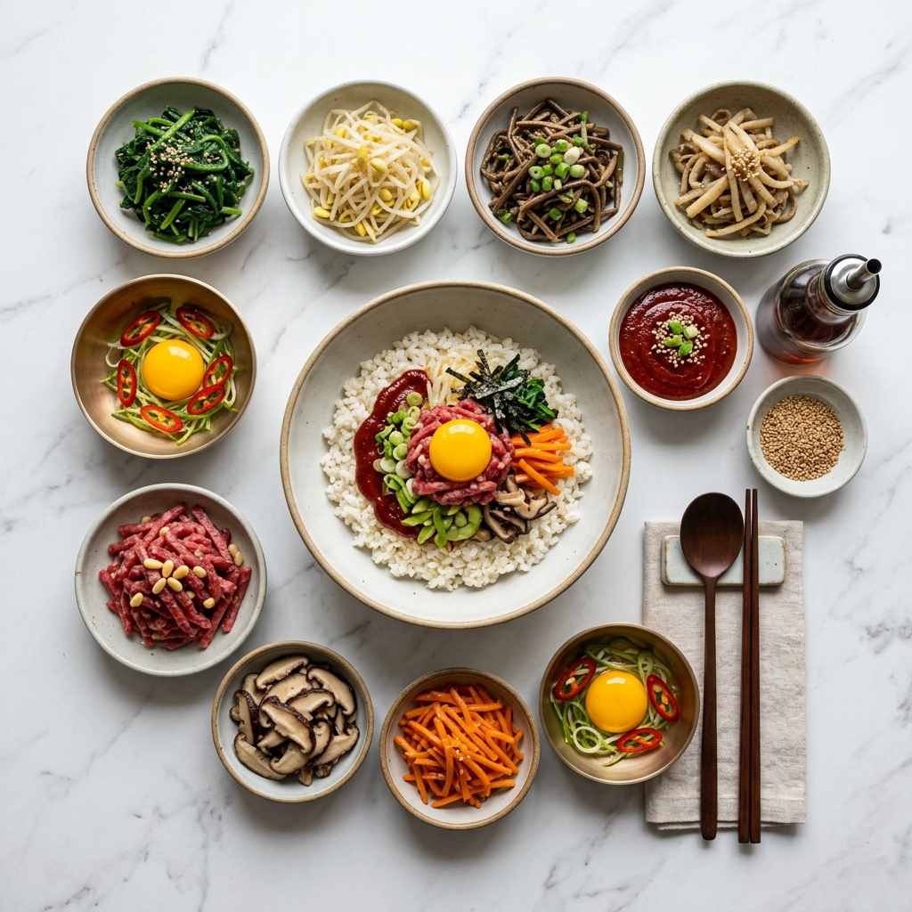
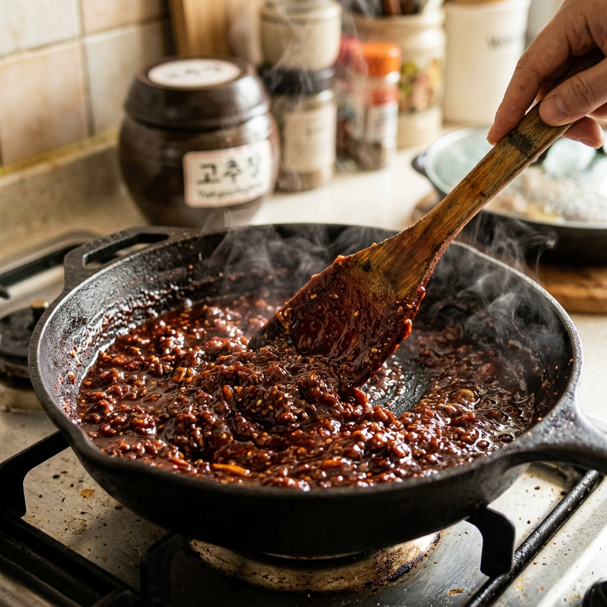
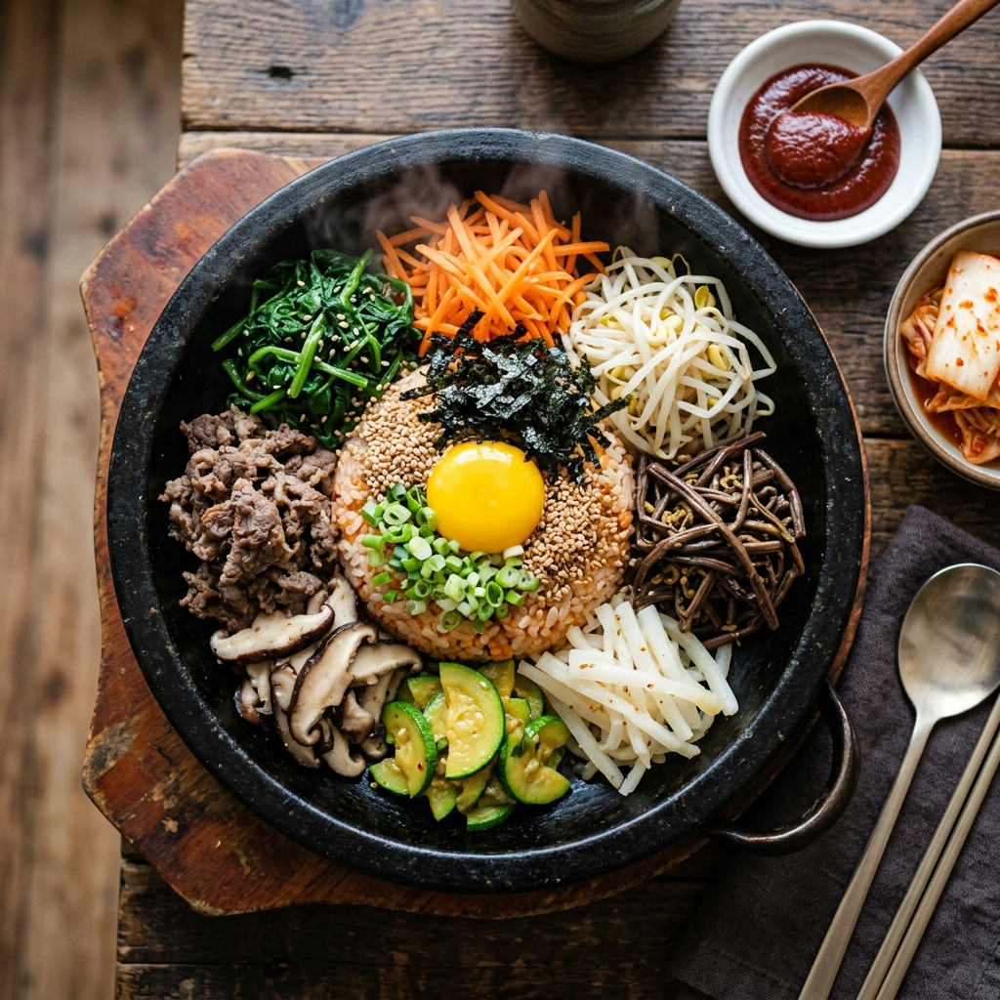

정통 전주비빔밥 레시피: 5색 나물 개별 조리법과 약고추장 황금 비율 완전 정복
전주비빔밥(全州비빔밥) — 이름 앞에 '전주'가 붙으면 그냥 비빔밥이 아니다. 콩나물 국물로 지은 밥, 7가지 이상의 나물 각각을 따로 조리한 장인의 공정, 소고기 육회 또는 볶음 고기, 그리고 무엇보다 손으로 직접 볶아낸 약고추장. 이 네 가지가 완성되어야 비로소 전주비빔밥이라 부를 수 있다. 이 글에서는 전주 현지 조리법을 기반으로, 집에서도 재현 가능한 5색 나물 개별 조리 매뉴얼과 약고추장 황금 비율을 공개한다. 초보자도 단계별 가이드를 따라하면 전주 식당 부럽지 않은 비빔밥을 만들 수 있다.
🎨 전주비빔밥의 미학 — 왜 '5색'이고 왜 '전주'인가
비빔밥은 전국 어디에나 있지만 전주비빔밥이 특별한 이유는 역사와 철학에 있다. 조선 시대 전라감영(全羅監營)이 있었던 전주는 당시 최고의 식재료와 요리 기술이 집결되는 도시였다. 제례나 연회에 올리던 다양한 나물과 고기 요리가 하나의 그릇에 담기면서 '비빔밥'이라는 형태로 정착했다는 기록이 있다.
5색(五色)의 개념은 한국의 전통 음양오행 사상에서 비롯된다.
- 청(靑/녹): 시금치나물, 오이채, 미나리
- 적(赤/홍): 당근나물, 육회 또는 볶은 소고기, 약고추장
- 황(黃): 달걀 지단(황), 황포묵 또는 노란 오이
- 백(白): 콩나물, 도라지나물
- 흑(黑): 고사리나물, 표고버섯 볶음
이 다섯 가지 색이 하나의 그릇에 담기면 단순한 식사가 아니라 균형과 조화를 상징하는 요리가 된다. 영양학적으로도 탄수화물(밥)·단백질(소고기·달걀)·비타민·미네랄·식이섬유(나물류)·발효 성분(고추장)이 한 끼에 모두 담기는 완전식품이다.
🛒 재료 준비 매뉴얼 — 2인분 기준 전체 재료표
| 분류 |
재료명 |
분량 (2인분) |
비고 |
| 주재료 — 밥 |
백미 (전라도산 추청 계열 권장) |
2컵 (종이컵 기준) |
콩나물 국물로 밥 짓기 권장 |
| 나물 1 |
콩나물 |
150g |
머리와 꼬리 정리 |
| 나물 2 |
시금치 |
100g |
뿌리 부분 포함 사용 권장 |
| 나물 3 |
건고사리 (불린 것) |
80g |
전날 밤 12시간 이상 불리기 |
| 나물 4 |
도라지 (생도라지 또는 건도라지) |
70g |
소금에 절여 쓴맛 제거 |
| 나물 5 |
당근 |
70g |
채썰기 (4~5cm 길이) |
| 나물 6 |
표고버섯 |
3~4장 |
건표고는 30분 이상 불리기 |
| 고기 고명 |
소고기 우둔 또는 홍두깨 (다짐육) |
100g |
육회용은 홍두깨, 볶음용은 우둔 |
| 달걀 |
달걀 |
2개 |
노른자 생 올리기 또는 지단 전처리 |
| 약고추장 |
고추장 |
3큰술 |
순창 또는 전주산 고추장 권장 |
| 약고추장 |
소고기 다짐육 |
50g |
약고추장용 별도 |
| 약고추장 |
물엿 (또는 꿀) |
1큰술 |
단맛·윤기 조절 |
| 기타 양념 |
참기름, 깨, 국간장, 다진 마늘, 소금 |
각 적량 |
나물 양념 공통 사용 |

전주비빔밥 2인분 재료 전체 / AI 제작 이미지
🌶️ 약고추장 황금 비율 — 전주비빔밥의 핵심은 여기에
전주비빔밥과 일반 비빔밥의 가장 큰 차이는 약고추장(藥苦椒醬)이다. 일반 비빔밥에는 고추장을 그대로 올리지만, 전주비빔밥에는 소고기를 볶은 뒤 고추장과 섞어 조린 '약고추장'을 사용한다. 이 한 단계 과정이 전주비빔밥의 맛 수준을 몇 배 높인다.
🔑 약고추장 황금 레시피 (2인분 기준)
재료: 고추장 3큰술, 소고기 다짐육 50g, 물엿 1큰술, 참기름 1작은술, 다진 마늘 ½작은술, 식용유 약간
비율 공식:
고추장 : 고기 : 물엿 = 3 : 1 : 1 (부피 기준)
[약고추장 황금 비율]
고추장 3T : 다짐육 50g : 물엿 1T : 다진마늘 ½t : 참기름 1t
조리 순서:
1. 팬 약불 예열 → 식용유 약간
2. 다짐육 투입, 젓가락으로 흩뜨리며 볶기 (완전히 익힐 것)
3. 다진 마늘 투입 → 향 올리기 30초
4. 고추장 투입 → 약불 유지하며 2~3분 볶기 (타지 않도록 주의)
5. 물엿 투입 → 1분 추가 볶기 (윤기 확인)
6. 불 끄고 참기름 투입 → 완성
✅ 셰프 포인트: 약고추장의 생명은 '약불 + 충분한 시간'이다. 센 불에 빠르게 볶으면 고추장이 타서 쓴맛이 생긴다. 팬을 흔들거나 주걱으로 계속 저어주면서 약불로 최소 3~4분을 볶아야 고추장의 날 냄새가 사라지고 깊은 감칠맛이 생긴다.
🥬 5색 나물 개별 조리법 — 나물 하나씩 완벽하게 익히기
전주비빔밥 나물은 각각 다른 방법으로 조리해야 한다. 하나의 레시피로 모든 나물을 처리하려다 식감이 뭉개지는 실수가 가장 흔하다.
① 콩나물 (白) — 아삭한 식감 살리는 법
콩나물은 절대 뚜껑을 열지 않는 것이 원칙이다. 뚜껑을 중간에 열면 비린 냄새(아미노산 산화)가 생긴다.
- 냄비에 콩나물 + 물 2큰술 + 소금 한 꼬집 투입
- 뚜껑 닫고 강불 → 2분 → 약불 → 3분 (총 5분, 뚜껑 절대 열지 말 것)
- 불 끄고 1분 뜸 들이기 → 뚜껑 열고 참기름 ½작은술 + 깨 적량
- 콩나물 국물은 버리지 말고 밥 지을 때 활용
② 시금치 (靑) — 색 살리는 데치기 공정
시금치는 데치기 직후 얼음물에 넣어야 선명한 녹색을 유지한다.
- 끓는 물에 소금 한 꼬집 넣기 (녹색 고정 역할)
- 시금치 투입 후 30~45초 데치기 (줄기가 살짝 부드러워질 때까지)
- 즉시 얼음물에 투입 → 1분 후 손으로 꼭 짜기
- 양념: 국간장 ½작은술 + 다진 마늘 ¼작은술 + 참기름 ½작은술 + 깨 적량
- 손으로 조물조물 무치기 (비비지 말고 들었다 놓기 반복)
③ 고사리 (黑) — 쫄깃함 극대화 볶음
건고사리는 12시간 불린 뒤 5분 삶아야 섬유질이 부드러워진다.
- 불린 고사리 → 끓는 물에 5분 삶기 → 체에 받쳐 물기 제거
- 팬 중불 → 식용유 1작은술 → 고사리 볶기 2분
- 국간장 1작은술 + 다진 마늘 ½작은술 + 참기름 ½작은술 투입 → 1분 추가 볶기
- 완성 후 깨 뿌리기, 씹는 맛을 살리는 것이 핵심
④ 도라지 (白) — 쓴맛 완전 제거법
도라지의 쓴맛(사포닌)을 제거하지 않으면 비빔밥 전체 맛을 망친다.
- 채 썬 도라지 + 소금 1작은술 → 손으로 주물러 절이기 5분
- 흐르는 물에 3회 이상 헹굼 → 물기 짜기
- 팬 중불 → 식용유 1작은술 → 도라지 투입 → 2분 볶기
- 소금 한 꼬집 + 참기름 ½작은술 → 완성
- 단맛을 원하면 설탕 ¼작은술 추가 가능
⑤ 당근 (赤) — 색 선명하게 볶기
당근의 지용성 비타민(베타카로틴)은 기름과 함께 볶을 때 흡수율이 5배 이상 높아진다.
- 당근 채썰기 (4~5cm 길이, 가능한 얇게)
- 팬 강불 → 식용유 1작은술 → 소금 한 꼬집 → 당근 투입
- 1분 30초 빠르게 볶기 (과볶음 시 수분 빠지고 색 죽음)
- 불 끄고 참기름 ¼작은술 → 완성
- 완성 후 바로 그릇에 펼쳐 식히기 (여열로 추가 익힘 방지)
🍚 밥 짓기 — 전주비빔밥의 숨은 공정, 콩나물 국물 밥
전주비빔밥을 전주답게 만드는 숨은 공정이 있다. 바로 콩나물 삶은 국물로 밥을 짓는 것이다. 이 방법으로 지은 밥은 콩나물의 아미노산과 아스파라긴산이 밥알에 스며들어 일반 물밥과 확연히 다른 고소하고 진한 밥맛을 낸다.
[콩나물 국물 밥 짓기]
- 콩나물 삶은 국물 + 부족분은 물로 보충 → 쌀 대비 1:1 비율
- 소금 한 꼬집 추가
- 일반 밥 짓는 방법과 동일하게 취사
- 완성 후 주걱으로 고슬하게 뒤집어 수분 날리기
콩나물 국물이 부족할 경우 다시마 국물(다시마 5g + 물 300mL, 20분 우림)로 대체해도 감칠맛 있는 밥이 완성된다.

약고추장 볶기 과정 / AI 제작 이미지
🥢 담기 공정 — 5색 배치의 미학
전주비빔밥은 담는 순서와 배치에도 규칙이 있다. 나물의 색 대비를 살려 시각적으로도 완성도 있게 담아야 진짜 전주비빔밥이다.
담기 순서
1. 뚝배기(또는 돌솥)를 약불로 달구기 → 참기름 약간 두르기 (누룽지 형성용)
2. 밥을 담고 그릇 중앙에 살짝 누르기
3. 밥 위에 나물 5가지를 색깔 교차로 방사형으로 배치
- 12시: 시금치 (녹)
- 2시: 당근 (홍)
- 4시: 콩나물 (백)
- 6시: 고사리 (흑)
- 8시: 도라지 (백/연회색)
- 10시: 표고버섯 볶음 (갈)
4. 소고기(볶음 또는 육회)를 중앙에 올리기
5. 달걀 노른자를 소고기 위에 올리기 (흰자 제거)
6. 약고추장을 한쪽에 소복이 담기
7. 참기름 한 바퀴 두르기 + 깨 뿌리기
💡 뚝배기 비빔밥 팁: 뚝배기를 미리 달구고 참기름을 두른 뒤 밥을 담으면 바닥에 고소한 누룽지가 생긴다. 먹다 마지막에 콩나물국 한 국자를 부어 숭늉처럼 마시는 것이 전주 현지식 마무리다.
🧑🍳 전문가 팁 — 절대 실패하지 않는 전주비빔밥 비법 7가지
전주에서 수십 년 경험을 가진 요리인들이 공통으로 강조하는 포인트를 정리했다.
1. 나물은 미리 만들어 두지 말 것
나물은 조리 후 2~3시간 이내에 먹어야 싱싱한 식감이 살아 있다. 냉장 보관 후 먹으면 수분이 빠져 퍽퍽해진다.
2. 참기름은 마지막에 두 번 넣기
나물 양념 시 1차, 담기 완료 후 전체에 뿌리기 2차로 참기름을 사용하면 향이 두 겹으로 쌓인다.
3. 소고기는 고온 단시간 볶기
볶음 소고기 고명은 팬을 강불로 달군 뒤 30초~1분 안에 볶아야 육즙이 살아 있다. 오래 볶으면 질겨진다.
4. 고추장 투입 순서
비빌 때 약고추장을 처음부터 전량 넣지 말 것. 절반만 넣고 비빈 뒤 맛을 보며 추가하면 과도한 매운맛을 조절하기 쉽다.
5. 비비는 방법 — 위아래로 뒤집기
젓가락이나 숟가락을 그릇 바닥부터 넣어 '파내듯이' 위아래로 뒤집는 것이 정석이다. 뒤섞듯 저으면 나물이 뭉개진다.
6. 달걀 노른자는 비비면서 터뜨리기
처음부터 터뜨려 넣으면 밥알에 달걀이 고르게 묻지 않는다. 비비다가 2~3번째 숟가락에서 자연스럽게 터뜨리면 고른 분포가 된다.
7. 대체 재료 안내
- 고사리 없을 경우 → 건취나물 또는 무나물로 대체
- 도라지 없을 경우 → 오이채(소금 절임) 또는 숙주나물로 대체
- 육회 소고기 없을 경우 → 참기름+간장+마늘로 양념한 불고기용 소고기 볶음으로 대체
📊 영양 분석 & 페어링 — 전주비빔밥 한 그릇의 영양학
전주비빔밥 1인분(약 700g 기준)의 영양 성분을 추정하면 다음과 같다.
| 영양소 |
1인분 기준 |
주요 공급원 |
| 에너지 |
약 550~650 kcal |
밥, 소고기, 고추장 |
| 단백질 |
약 25~30g |
소고기, 달걀, 콩나물 |
| 식이섬유 |
약 6~9g |
고사리, 도라지, 당근, 시금치 |
| 비타민 C |
일일 권장량의 약 60% |
시금치, 당근, 콩나물 |
| 철분 (Fe) |
일일 권장량의 약 30% |
시금치, 소고기, 고사리 |
| 유산균 전구체 |
- |
발효 고추장 |
페어링 추천
전주비빔밥과 가장 잘 어울리는 곁들임은 콩나물 해장국이다. 비빔밥을 먹은 뒤 뜨거운 콩나물국을 한 숟가락 떠먹으면 매운 고추장의 열감을 시원하게 중화시켜준다. 전주 현지 식당에서 비빔밥과 콩나물국이 세트로 나오는 것이 이런 이유에서다.
주류 페어링으로는 막걸리가 단연 1위다. 고추장의 매운맛과 나물의 향긋한 맛이 막걸리의 달콤한 단맛과 청량감과 만나면 감칠맛의 상승효과가 생긴다. 전주 인근 완주군 생막걸리, 또는 연산 막걸리가 최상의 페어링으로 꼽힌다.

정통 전주비빔밥 완성작 / AI 제작 이미지
⏱️ 조리 시간 요약 — 처음부터 끝까지 얼마나 걸리나
| 단계 |
작업 내용 |
소요 시간 |
| 전날 |
고사리 불리기 |
12시간 (수동 작업 없음) |
| 1단계 |
콩나물 삶기 + 국물 빼기 |
10분 |
| 2단계 |
밥 짓기 (콩나물 국물 사용) |
30분 (취사 포함) |
| 3단계 |
나물 5종 순차 조리 |
약 30분 |
| 4단계 |
약고추장 만들기 |
10분 |
| 5단계 |
담기 & 마무리 |
5분 |
| 총 소요 시간 |
(전날 준비 제외) |
약 1시간 15분~1시간 30분 |
#전주비빔밥
#전주비빔밥레시피
#약고추장만들기
#비빔밥나물
#5색나물
#한식레시피
#정통전주비빔밥
#콩나물국물밥
#집밥레시피
#한국음식만들기